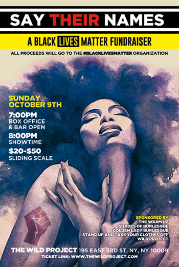

past performance |
|||
|
Say Their Names: A Black Lives Matter Fundraiser showtimes & tickets:Oct 9 @ 8PM $20-50 Sliding Scale All proceeds will go to the #BlackLivesMatter organization. Join NYC burlesque and comedy producers Jillaine Gill & Kerryn Feehan (SUATYCO), Essence Revealed (Golden Lady Burlesque), Sydnee Washington & Marie Faustin (The Warm Up) and Sweet Lorraine (Shades of Burlesque) for SAY THEIR NAMES: A Black Lives Matter Fundraiser. These Incredible artists will pay homage to the Black/Brown/LGBTQ/Trans brothers and sisters we lost this year to senseless police violence. We will SAY THEIR NAMES and Celebrate their Lives. Get ready for a powerful evening of performances full of joy and remembrance. |
 | ||
|
Sweet Lorraine (Producer/Performer): Sweet Lorraine is the creator and producer of Shades of Burlesque, NYC’s Only all Black burlesque revue! Through SHADES, she continues to bring visibility to Black and Brown burlesque entertainers, as well as foster nurturing spaces for them to share their stories and dynamic expressions of sexuality! Essence Revealed (Producer/Performer): Essence Revealed, the Bubbling Brown Sugar of Burlesque. A dual degreed, former lap dance engineer of the upscale gentlemen's club scene, she has performed burlesque at venues all over New York City, including Duane Park, Artist in Residence at Room 69 @ the Hotel Chantelle, Hypergender Burlesque & Red Umbrella Diaries. She's taught workshops at Universities in the US and dance studios is Europe. She tours and has performed in Canada, Europe, China and South Africa. She's currently also dancing with Gesel Mason Performance Project's Antithesis. She will seduce you from the stage, make you smile or cry with her versatile performance style. Jillaine Gill (Producer): Jillaine Gill is an actress, writer/director, and producer. She helped create and has co-produced and co-hosted Stand Up and Take Your Clothes Off!, the longest running all-female comedy and burlesque show in NYC, for almost five years. One of her favorite theatrical projects was the one woman show Dreams of the Clockmaker by Sean Gill, which had a limited run at The Wild Project. You can catch her in the feature films Prayer to a Vengeful God and Cut to Black on most digital platforms, and she has studied acting and writing in New York with Anthony Abeson, Josh Pais, and David Drake. Kerryn Feehan (Producer) is a stand up comic, writer, actress and producer. She co wrote and stars in the short film Shitfaced, an official selection and nominated film of the Boston Underground Film Festival, New York Comedy Shorts Festival, and Action on Film Festival in LA. She has appeared on Spike TV, TruTV, and TLC. She co produces the longest running all female stand up and burlesque show in NYC, Stand Up and Take Your Clothes Off with Jillaine Gill. She also co hosts the podcast "Shame On" with Myka Fox on the Gas Digital Network. Twitter: @KFreehams. |
|||
upcoming performances |
|||
 |
|||
| EVQ Film Festival 2018 August 20-25 |
|||
performance archives |
|||
| 2018 | 2017 | 2016 | 2015 |
| 2014 | 2013 | 2012 | 2011 |
| 2010 | 2009 | 2008 | 2007 |